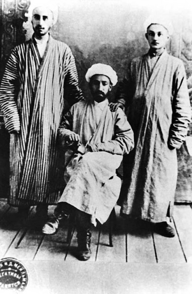

Buxoro talabalarining Germaniyaga oʻqishga yuborilishi (1922): jadidlarning ilm orzusi va qatagʻon
1922-yilda Buxoro Xalq Sovet Respublikasi hukumati bir guruh yoshni Germaniyaga oliy taʼlim olishga yubordi. Umumiy hisobda Buxoro va Turkistondan qariyb 70 nafar talaba Germaniyaga joʻnatildi; ularning taxminan 56 nafari Buxorodan boʻlib, 44 nafari oʻsha yozda Berlin oʻquv yurtlariga joylashtirildi. Tashabbus asosan maorif noziri (keyinroq bosh vazir) Abdurauf Fitrat bilan bogʻliq edi. 1924-yilda respublika tugatilgach, talabalar qaytarib olindi; 1930-yillardagi qatagʻonda koʻpchiligi «millatchi» yoki «chet el taʼsiri» ayblovi bilan otildi yoki surgun qilindi, baʼzilari esa chet elda muhojir boʻlib qoldi. Tarix — faqat hujjatlashgan faktlar asosida.

Oʻzbek maʼrifatparvarligi tarixida 1922-yil alohida oʻrin tutadi: oʻsha yili Buxorodan bir guruh yosh Germaniyaga oliy taʼlim olishga joʻnatildi. Bu — jadidlarning oʻlkani zamonaviy ilm bilan koʻtarish orzusining amaliy ifodasi edi. Quyida bu voqea faqat hujjatlashgan faktlar asosida bayon etiladi.
Fon: Buxoro Xalq Sovet Respublikasi
1920-yil sentabrda Buxoro amirligi agʻdarilib, oʻrnida Buxoro Xalq Sovet Respublikasi (BXSR) eʼlon qilindi. Uning rahbariyatida jadid — maʼrifatparvar kuchlar taʼsiri kuchli edi. Yangi hukumat uchun eng ogʻir muammolardan biri — zamonaviy mutaxassislar, muhandis va shifokorlarning yoʻqligi edi. Shu bois chetga talaba yuborib, oʻz kadrlarini tayyorlash gʻoyasi ilgari surildi.
1922-yil: Germaniyaga yoʻl
1922-yilda BXSR hukumati bir guruh yoshni Germaniyaga oʻqishga yuborishga qaror qildi. Manbalarga koʻra, Buxoro va umuman Turkistondan jami qariyb 70 nafar talaba Germaniyaga joʻnatilgan; ularning taxminan 56 nafari Buxorodan boʻlgan, 44 nafari esa oʻsha yozda Berlindagi oʻquv yurtlariga joylashtirilgan. Talabalar turli yoʻnalishda — qishloq xoʻjaligi, toʻqimachilik, kimyo, elektrotexnika, konchilik, tibbiyot, pedagogika va falsafa boʻyicha taʼlim oldi.

Fitrat va tashabbuskorlar
Yoshlarni chetga oʻqishga yuborish tashabbusi koʻp jihatdan maorif noziri — keyinchalik BXSR Nozirlar Kengashi raisi (bosh vazir) boʻlgan Abdurauf Fitrat nomi bilan bogʻlanadi. Fitrat maorif tizimini zamonaviylashtirish, dunyoviy fanlarni joriy etish tarafdori edi. Talabalarni yuborish va chet elda ularni qoʻllab-quvvatlash ishiga Muso Saidjonov kabi arboblar ham tashabbuskor boʻldi; talabalarga koʻmak berish uchun «Koʻmak» jamiyati tuzilgan edi.
Ilk chet elda oʻqigan oʻzbek ayollari
Guruh tarkibida ikki nafar qiz — Xayriniso Majidxonova va Maryam Sultonmurodova ham bor edi. Ular chet elda oliy taʼlim olgan dastlabki oʻzbek ayollari sanaladi. Xayriniso Germaniyada tibbiyot yoʻnalishida, Maryam esa jurnalistika va nemis adabiyoti boʻyicha oʻqidi.
Respublika tugatildi, talabalar qaytarildi
1924-yilda milliy-hududiy chegaralanish natijasida BXSR tugatilib, Buxoro hududi asosan Oʻzbekiston SSR tarkibiga kiritildi. 1920-yillarning oxiriga kelib Germaniyadagi talabalar asta-sekin Vatanga qaytarib olindi. Ularning aksariyati bilim va zamonaviy kasb egasi boʻlib qaytdi, biroq siyosiy vaziyat tubdan oʻzgargan edi.
Qatagʻon: otuv va surgun
1930-yillardagi ommaviy qatagʻon davrida Germaniyada oʻqigani koʻpchilik uchun ayblovga aylandi: ular «millatchi» yoki «chet el taʼsiridagi unsur» sifatida qamaldi. Xayriniso Majidxonova 1938-yil 9-oktabrda otib tashlandi (1999-yilda oqlandi). Maryam Sultonmurodova 1937-yilda hibsga olinib, 1939-yilda 10 yil muddatga hukm qilindi, 1949-yilda qayta hibsga olinib Krasnoyarskka surgun qilindi va faqat 1957-yilda oqlandi. Tashabbuskor Abdurauf Fitratning oʻzi ham 1938-yilda qatagʻon qurboni boʻldi.
Muhojirlikda qolganlar
Qaytish xavfli ekani ayon boʻlgach, talabalarning bir qismi Germaniya va Yevropada qolib, muhojir hayotini tanladi. Shu tariqa 1922-yilgi taʼlim safari oʻzbek siyosiy muhojirligi tarixining bir boʻlagiga ham aylandi — Turkiston maʼrifatparvarlarining Gʻarbdagi izlari qatorida. Bu voqea diaspora tarixida ilm va qatagʻon oʻzaro bogʻliq boʻlgan fojiali bobni tashkil etadi.
Nega bu bugun ham muhim
Mustaqillik yillarida bu talabalarning nomlari qayta tiklandi, qatagʻon qurbonlari oqlandi va ularning taqdiri tadqiq etila boshlandi. 1922-yilgi Germaniya safari — oʻzbek yoshlarini dunyo ilmiga ulash boʻyicha dastlabki jiddiy urinishlardan biri sifatida, ham maʼrifat, ham yoʻqotish xotirasi oʻlaroq eslanadi.

Manbalar
- Bukharan People's Soviet Republic — education reform, students sent to Germany (Abdurauf Fitrat)
- Abdurauf Fitrat — biography (education minister, 1938 repression)
- Kun.uz — Germaniyada oʻqigani uchun qatagʻon qilingan oʻzbek ayollari (Xayriniso Majidxonova, Maryam Sultonmurodova)
- Dov B. Yaroshevski — "Bukharan Students in Germany, 1922–1925" (Bamberger Zentralasienstudien)